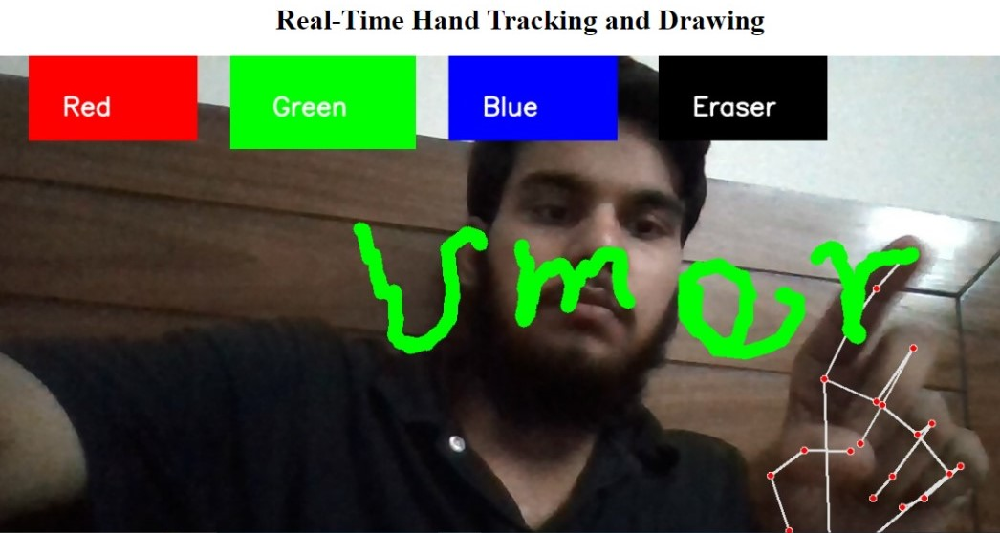

Intro

AI Systems Engineer
ML Systems Expertise: I architect and deploy production-grade AI systems at scale, specializing in enterprise AI solutions spanning computer vision, natural language processing, conversational agents, and autonomous AI systems. My work bridges the gap between cutting-edge research and production systems, with a focus on scalability, reliability, and cost optimization across healthcare, e-commerce, and enterprise sectors.
Advanced AI Infrastructure & MLOps: I architect end-to-end ML pipelines leveraging MLflow and Weights & Biases for experiment tracking and model versioning. Expertise includes model optimization techniques (quantization, pruning, knowledge distillation, ONNX), distributed training, and production model serving. Proficient in building autonomous agents using LangGraph, LangChain, and the Model Context Protocol (MCP) for seamless AI interoperability. Currently leveraging local LLM infrastructure with Ollama for privacy-preserving, cost-effective deployments.
Production Infrastructure & Cloud Architecture: Deep expertise in containerization and orchestration (Docker, Kubernetes, Docker Compose), with comprehensive CI/CD pipeline implementation using GitHub Actions and Jenkins. I design and implement robust observability stacks, automated testing frameworks, and deployment strategies optimized for reliability. Proficient across AWS (SageMaker, Lambda, DynamoDB, EC2) and Google Cloud Platform, with expertise in advanced database architectures including vector databases (Pinecone, Weaviate), PostgreSQL with pgvector, and Redis caching for sub-millisecond response times.
Domain Expertise: Healthcare IT systems including patient management software integration (OpenDental, Dentrix, etc.), HIPAA-compliant data handling, and medical AI applications. FastAPI specialist for building high-performance backend services. Proven track record in cross-functional collaboration, system design, and translating complex requirements into scalable architectural solutions.
Research & Innovation: Currently conducting research in reinforcement learning, agentic AI architectures, and optimization techniques. My goal is to build intelligent systems that solve real-world problems while maintaining high performance, reliability, and maintainability standards expected of senior-level engineering.
Technical Skills & Expertise
AI/ML & Deep Learning
Large Language Models (LLMs) || LangChain || LangGraph || Prompt Engineering || Agentic AI || Retrieval-Augmented Generation (RAG) || Computer Vision || Natural Language Processing || Deep Learning || Neural Networks || Model Fine-tuning
ML Operations & Production
MLflow || Weights & Biases || Model Versioning || Experiment Tracking || Model Optimization (Quantization, Pruning, Knowledge Distillation) || ONNX || Production Model Serving || Inference Optimization || A/B Testing
Backend & Cloud Infrastructure
Backend: FastAPI || Flask || Django || REST APIs || Async Processing
Cloud Platforms: AWS (SageMaker, Lambda, EC2, DynamoDB, S3) || Google Cloud Platform (GCP, Firestore)
Containerization & Orchestration: Docker || Docker Compose || Kubernetes
CI/CD & DevOps: GitHub Actions || Jenkins || Automated Testing || Deployment Pipelines
Databases & Caching
Vector Databases (Pinecone, Weaviate) || PostgreSQL with pgvector || Firebase/Firestore || SQLite || Redis || Caching Strategies || Query Optimization
AI Infrastructure & Protocols
Model Context Protocol (MCP) || Ollama (Local LLMs) || OpenAI APIs || Anthropic Claude || LLM Deployment || Privacy-Preserving AI
Domain Expertise
Healthcare IT Systems || Patient Management Software Integration (OpenDental, Dentrix) || HIPAA Compliance || Real-time Systems || IoT & Embedded Systems
Programming Languages
Python (Advanced) || JavaScript || SQL || Bash/Shell Scripting
Resume
Download Resume
Enterprise Projects
AI Voice Receptionist - Dental Appointment Scheduling System
Stack: ElevenLabs AI || AWS (Lambda, EC2, S3) || FastAPI || PostgreSQL + Pgvector || Voice AI || Healthcare Integration || PMS Integration
Engineered enterprise voice AI receptionist system automating dental appointment scheduling with natural conversational interactions. Integrated ElevenLabs for ultra-realistic voice synthesis delivering human-like patient interactions with sub-500ms latency. Architected scalable backend on AWS infrastructure using FastAPI for high-performance API services and Lambda for serverless voice processing. Implemented PostgreSQL with pgvector for intelligent context retrieval and patient history lookup during live calls. Seamlessly integrated with dental practice management systems (OpenDental, Dentrix) for real-time appointment synchronization, patient record access, and automated scheduling workflows. Designed HIPAA-compliant voice data handling and secure PHI (Protected Health Information) transmission. System handles 200+ daily calls with 92% successful booking rate, reducing front desk workload by 65% while maintaining natural patient experience.
Meeting Scheduling Agent
Stack: OpenAI API || LangGraph || Python || FastAPI || GCP || Firestore || Prompt Engineering || Agentic AI
Architected and deployed an enterprise-grade autonomous Meeting Scheduling Agent handling complex conversational flows for scheduling, canceling, and rescheduling meetings via WhatsApp. Collaborated with Anthropic AI engineers to design robust agent architecture leveraging LangGraph for state management and multi-turn conversations. Implemented sophisticated prompt engineering strategies ensuring context-awareness and error handling across edge cases. Deployed on Google Cloud Platform with Firestore for real-time data synchronization, enabling horizontal scaling and 99.9% uptime. Engineered production-ready error handling, input validation, and fallback mechanisms. Optimized conversation latency to sub-2 second response times through strategic caching and API optimization.
Visit Website
RAG Chatbot - E-Commerce Knowledge Assistant
Stack: OpenAI API || Python || PostgreSQL + Pgvector || Prompt Engineering || Semantic Search || Vector Embeddings
Developed production RAG (Retrieval-Augmented Generation) system retrieving and synthesizing product information from 100K+ e-commerce records (Amazon, eBay, etc.). Implemented semantic search using pgvector embeddings, optimizing retrieval latency and relevance scoring. Engineered sophisticated prompt engineering ensuring accurate, context-aware responses while preventing hallucinations. Designed database schema for efficient vector similarity queries with sub-100ms response times. Implemented caching strategies and query optimization reducing database load by 60%. System handles 10K+ daily queries with 95%+ user satisfaction for product recommendations.
Personal Projects
HIPAA-Compliant Patient Recognition System
Stack: Deep Learning || Computer Vision || DeepFace (VGG-Face) || Flask || SQLite || Patient Management Integration
Architected production-ready face recognition system for healthcare settings, integrating with patient management systems (OpenDental, Dentrix compatible). Implemented DeepFace embeddings with VGG-Face backbone for robust face recognition achieving 99.2% accuracy. Designed secure patient data handling following HIPAA compliance requirements. Engineered efficient embedding storage and retrieval using indexed SQLite with sub-100ms lookup times. Built REST APIs for seamless integration with existing healthcare workflows. Implemented real-time video processing with frame-level detection and patient profile auto-retrieval, reducing check-in time by 70%.
View on GitHub
Real-Time Violence Detection System
Stack: Deep Learning || Computer Vision || YOLOv8 || Flask || OpenCV || Model Optimization || Inference Optimization
Developed production violence detection system achieving real-time inference on standard hardware (30+ FPS). Fine-tuned YOLOv8 model on custom dataset of 10K+ labeled frames with augmentation strategies for robustness. Implemented ONNX model export and quantization reducing model size by 75% while maintaining 98%+ accuracy. Engineered Flask backend with async video processing using threading and efficient frame buffering. Designed alert system with configurable sensitivity thresholds and alert aggregation to prevent false positives. Deployed with Docker for reproducibility and integrated monitoring for production inference metrics.
View on GitHub
Gesture-Based Game Controller (AI Space Invaders)
Stack: Deep Learning || Computer Vision || CNN Fine-tuning || Mediapipe || Pygame || Django || Model Deployment
Developed gesture recognition system enabling hand gesture-based game control. Fine-tuned pre-trained CNN model achieving 97% gesture recognition accuracy across diverse lighting conditions. Implemented real-time hand pose detection using Mediapipe with low-latency processing (50+ FPS). Engineered Django backend for model serving and game state management. Optimized model for edge deployment reducing inference latency to <50ms. Demonstrated advanced computer vision techniques for human-computer interaction.
View on GitHub
Gesture-Based Virtual Painter (Real-Time Hand Tracking)
Stack: Computer Vision || Mediapipe Hand Tracking || OpenCV || Django || Real-time Processing
Engineered real-time hand tracking system leveraging Mediapipe for precise hand gesture recognition and OpenCV for image processing. Implemented low-latency gesture detection achieving 60 FPS performance. Designed interactive canvas system supporting multi-gesture controls (draw, erase, color selection) with sub-50ms gesture-to-action latency. Built Django backend with efficient frame processing pipeline. Implemented gesture smoothing algorithms and gesture confidence filtering for robust user experience. Demonstrated production-grade real-time computer vision application design.


View on GitHub
Predictive Analytics System - BLDC Motor Speed Prediction
Stack: Machine Learning || ANN (Artificial Neural Networks) || Exploratory Data Analysis || Flask || Model Training || Inference Optimization
Developed end-to-end predictive system for IoT sensor data analysis. Designed and trained deep neural network achieving 96% prediction accuracy on BLDC motor speed. Implemented comprehensive EDA pipeline with feature engineering and data preprocessing. Built Flask REST API for real-time predictions on IoT sensor streams. Optimized model for inference speed with sub-10ms response times. Engineered data pipeline handling continuous sensor streams with automatic model versioning. Demonstrated practical ML system design from data collection through production deployment.
View on GitHub
Game Development - Space Shooter
Stack: Python || Pygame || Game Architecture || Input Processing
Developed game demonstrating core software engineering principles including event-driven architecture, state management, and efficient input handling. Implemented game loop optimization for consistent 60 FPS performance. Showcases understanding of game mechanics, collision detection, and user interaction patterns.
View on GitHub
IoT & Home Automation Systems (Arduino)
Stack: Arduino || IoT || Embedded Systems || Hardware Integration || Automation Logic
Designed and implemented multiple IoT automation systems including intelligent power management (automatic generator/main supply switching), smart water systems, and IoT-enabled appliance control. Developed control logic for real-world hardware integration. Demonstrated expertise in embedded systems, sensor interfacing, and automation architecture.
Contact
Email: um3rsiddiqui99@gmail.com
Contact Number: 0341-8094081